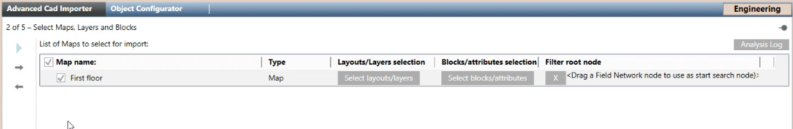

(Optional) Set the Root Node Where to Search for Objects
- You are on page 2 of 5: Select Maps, Layers and Blocks, and you completed the layers and layouts selection (section 2 above).
- You want to restrict the search for fire objects in System Browser for one or more maps. You can skip this section if you do not need to filter the search.
NOTE: This filter can be useful if the identification value (name, description, or element ID) is not unique in the entire project across multiple networks or control panels, and a global object identification fails. By focusing the search for objects within a specific subtree, you can match the map objects with the corresponding control panel objects within a more limited set.
- In System Browser, select Management View or a user-defined view,
- Expand the System Browser tree as necessary to locate the top node of the subtree corresponding with the first map that you want to configure.
- Drag the node into the Filter Root Node column of the map.
- The node Description or Name (depending on the current System Browser setting) displays, and indicates that the search for objects in the map will be restricted to the System Browser subtree starting from this node. Click to remove the research filter.
- Repeat steps 2 and 3 above as necessary to associate more maps to the corresponding root nodes.
- Click
 .
.
